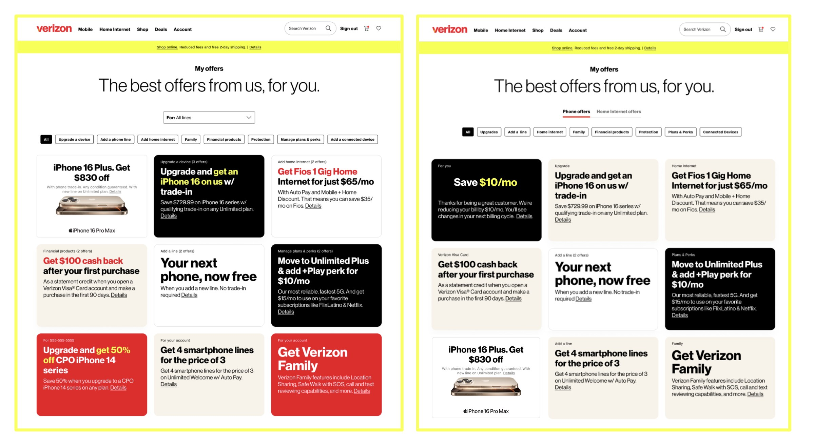

- Org
- Verizon
- Year
- 2025
- Role
- Research lead, Offer Orchestration
- Methods
- Behavioral analytics, in-depth interviews, usability, color study
Making personalized offers easier to act on
Why were customers bouncing off offers that were built for them?
Context
Verizon was consolidating personalized offers into a single My Offers experience across the app and website. Engagement was falling, and new multi-offer tiles were about to roll out.
Approach
I paired behavioral telemetry with in-depth interviews, then synthesized findings across several offer studies, including a color study and tile usability testing run by my team. The data showed where people dropped off. The interviews explained why: competing visual hierarchies, crowded tiles and brand color combinations that added friction.
What changed
The synthesis became a set of experience principles for offer strategy. Design used it to rework tile layout, color and placement, and I made the case to executives for end-to-end usability over isolated feature scores.
Program results, 9-month monthly averages before vs. after the work began (March 2025).
